The launch black screen is most likely AlphaAnimatedImageView decoding all 165 frames of home_cat_entrance.webp on the main thread before the first frame. The cat also mounts at every cold start, because "no snapshot yet" is treated as "no sessions". Measure with signposts first, then fix.
Decode the cat off the main thread; show a still image first.
Show the cat only when sessions are known to be empty.
Persist the last session list in the Rust store and render it at launch with an "Updating…" pill.
Give the launch screen the theme background and logo.
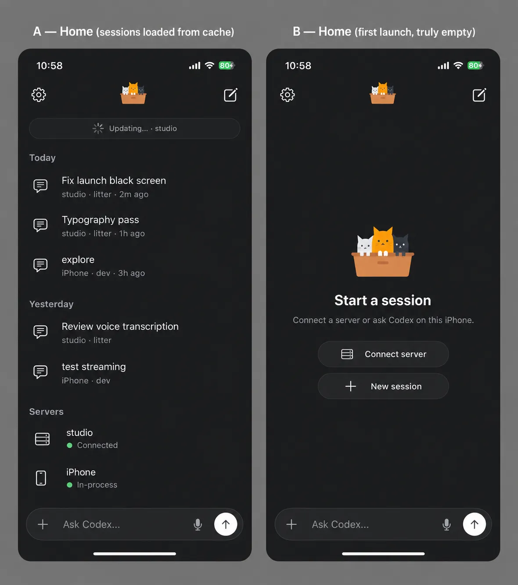
A: cached sessions render instantly while servers reconnect. B: true first launch with a static cat.
2. Conversation
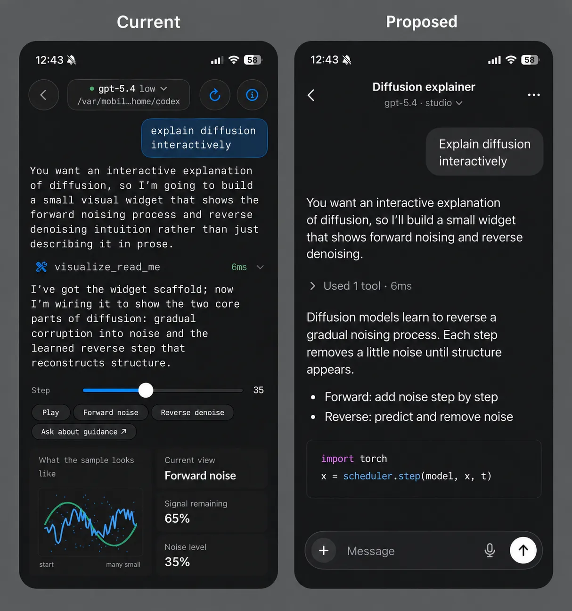
Current vs proposed: system font at 17pt, airy line height, neutral user bubble, unboxed assistant text, tools collapsed to one row, title-first header.
3. Voice and attachments
Today, dictation errors (no login token, HTTP failure, too-short recording) are stored but never shown. Android allows one image per message; iOS allows 10 and silently drops extras. Neither supports video, and "files" only send a path as text.
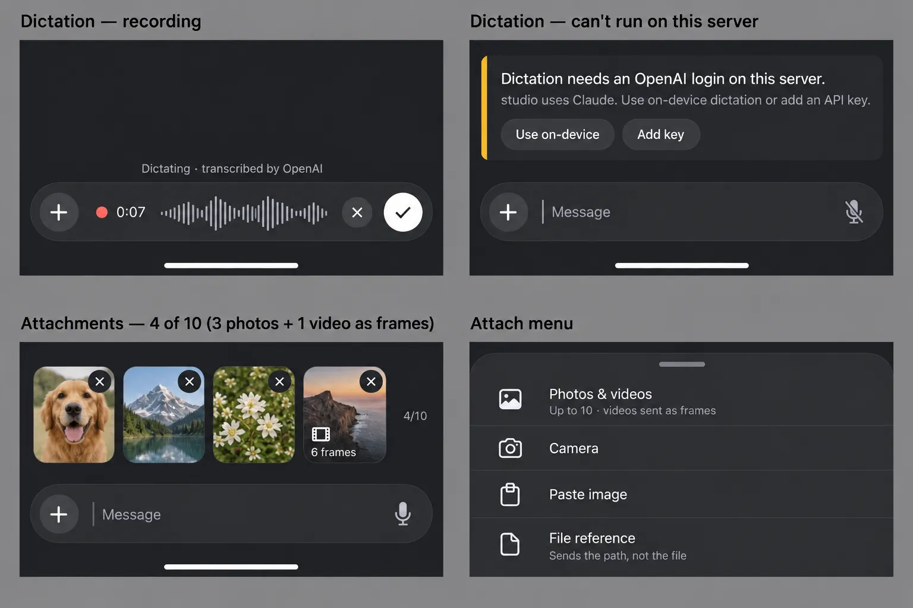
Recording state, an inline error with fixes, attachment counter with a video sent as frames, and an attach menu that states what each option sends.
Capability
iOS now
Android now
Proposed
Images per message
10 (extras dropped silently)
1 (replaces)
10 on both, visible counter
Image resize
2048px, ~1.2 MB target
none
same rule on both
Video
no
no
6–10 extracted frames as images
Files
path as text
content:// URI as text
labelled "file reference"
Dictation errors
silent
silent
check before recording, inline notice
Dictation backend
OpenAI/ChatGPT using the server's login token
one Rust implementation; optional on-device fallback
4. Type and spacing tokens
Token
Now
Proposed
Message body
16pt, default line height
17pt, ~1.4× line height
Paragraph spacing
8
12–14
Space between turns
10
24–28
User bubble
accent color, 60pt gutter
neutral gray, max ~78% width, radius 20
Smallest text
9–11pt (154 call sites)
13pt minimum
Side margins
14–16
20
Spacing scale
inline numbers
4 / 8 / 12 / 16 / 20 / 24 / 32
Proposed values target the ChatGPT iOS look; they are not measured from it.
5. Decisions to confirm
Replace the zoomable home layout with a plain list.
The home realtime voice orb is dropped from the mockup; the mic becomes dictation only.
Video via extracted frames rather than uploading the file to the server.
Transcription and the cached session list move to Rust, shared by iOS and Android.
Dark mode only so far; no light-mode mockups yet.
6. All screens (round 2)
Same design system on every screen: SF Pro, 17pt body, 20pt margins, ~60pt rows, grouped inset lists, plain-glyph nav buttons. The approved round-1 home and conversation mockups were the style reference for each image.
6.1 Home with 10 servers — three options
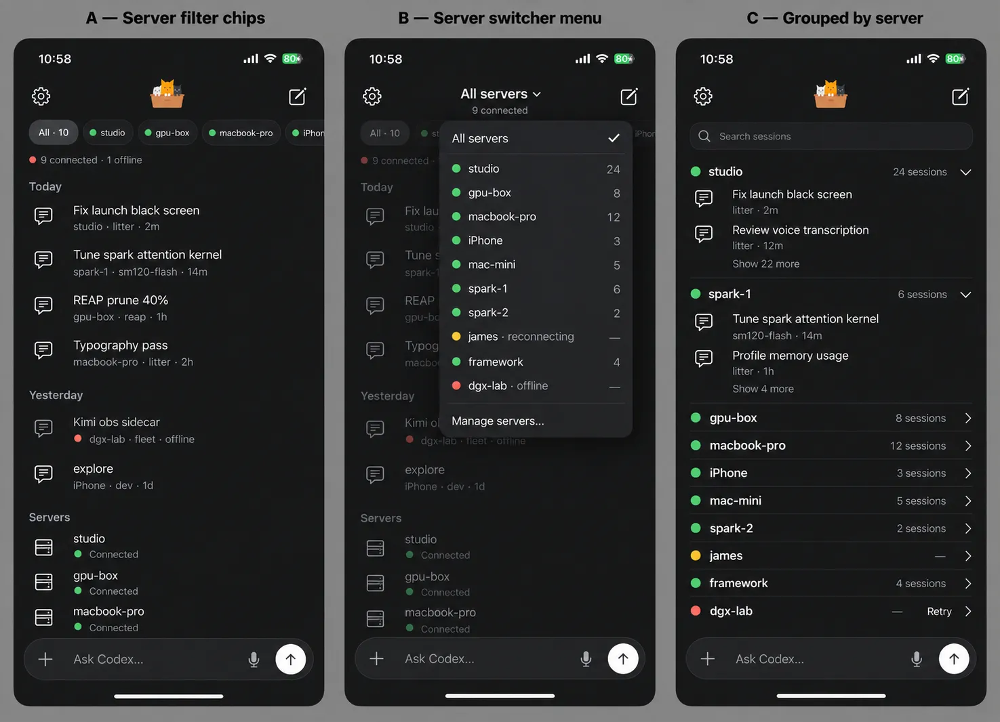
A: horizontal server chips filter one session list. B: title menu switches servers. C: sessions grouped by server with collapsible sections.
Recommendation: A. Sessions stay the main content no matter how many servers are connected, and one tap filters to a server. The "Servers" list at the bottom of A should collapse to one row ("Servers — 9 connected, 1 offline ›") that opens the Servers screen. C is better for people who think in servers first, but it grows with every server added.
6.2 Servers and server detail
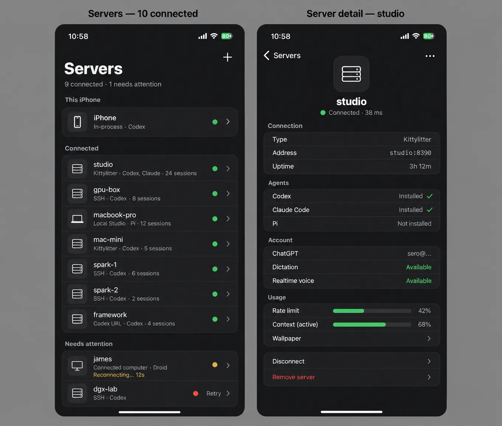
Servers grouped as This iPhone / Connected / Needs attention. Detail shows connection, agents, account (including whether dictation and realtime voice will work), usage, and actions.
6.3 Add a server
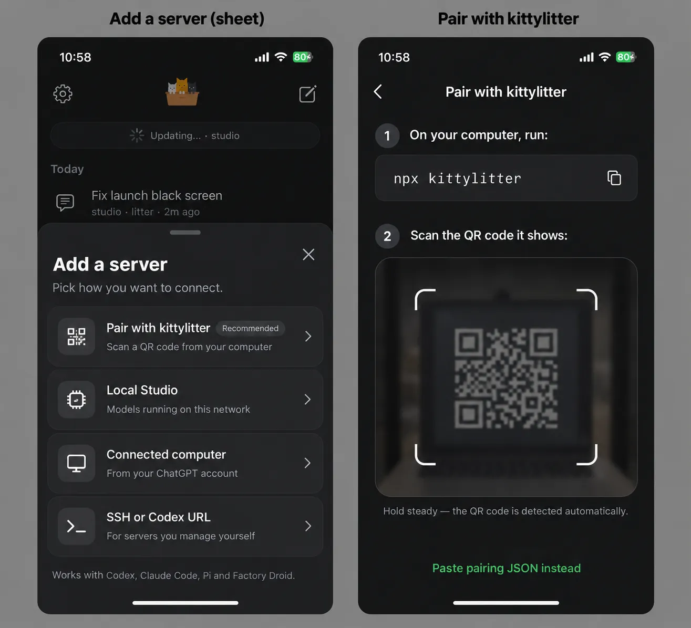
Four connection paths in one sheet, kittylitter marked recommended; pairing is two numbered steps.
6.4 Conversation: working, plan, approval
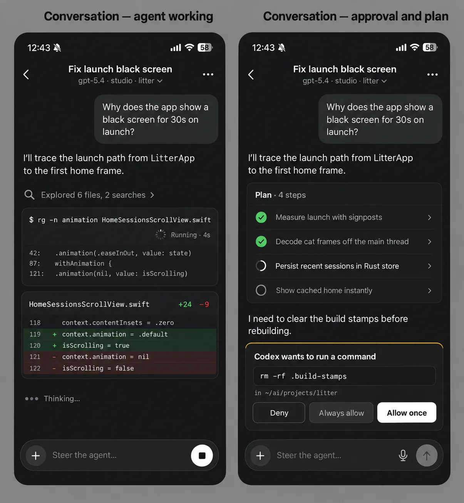
Tool activity collapses to quiet rows; commands and diffs are the only monospace. Approvals sit above the composer with Deny / Always allow / Allow once.
6.5 New session
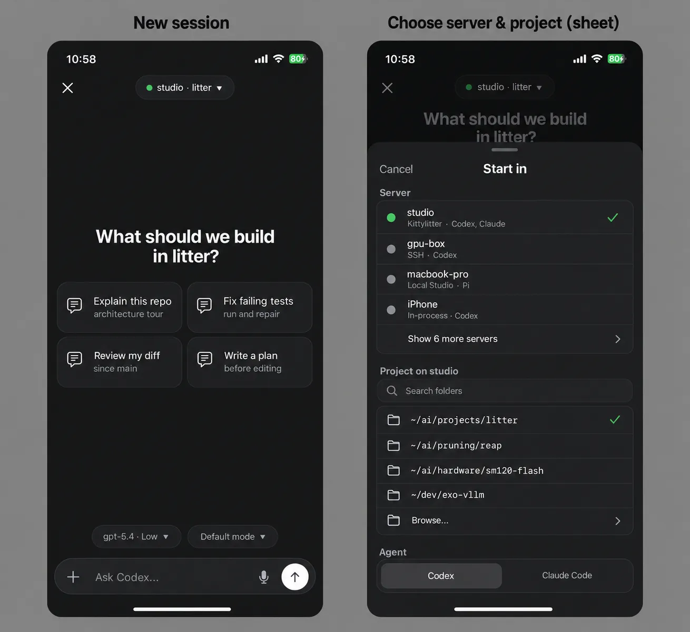
ChatGPT-style empty prompt with suggestions; server, project and agent are picked in one sheet (the list stays short with "Show 6 more servers").
6.6 Settings and appearance
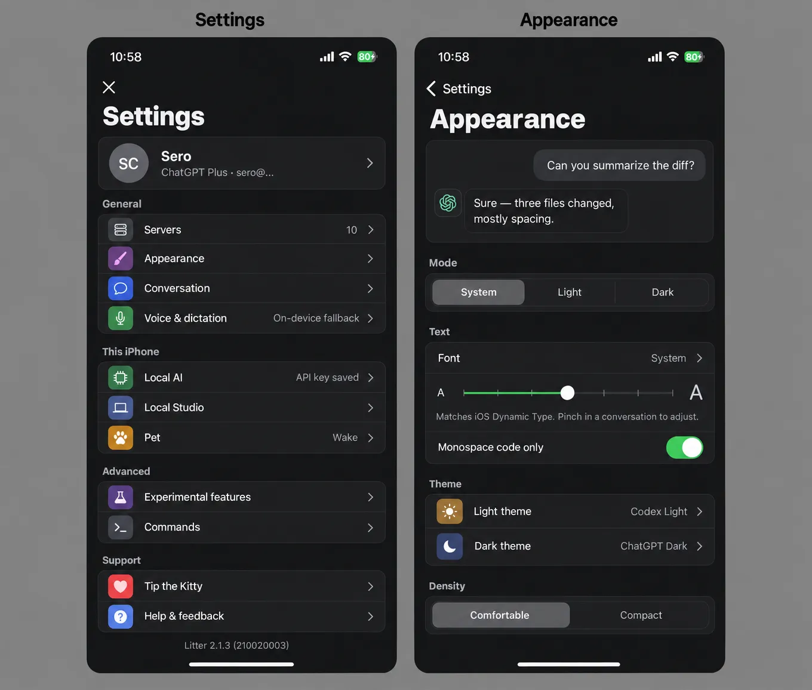
Grouped settings with account at the top. Appearance gets a live preview, text size following Dynamic Type, "Monospace code only", and a Comfortable/Compact density switch. Fix before building: the preview shows an OpenAI logo, which should be the Litter mark.
6.7 Realtime voice and terminal
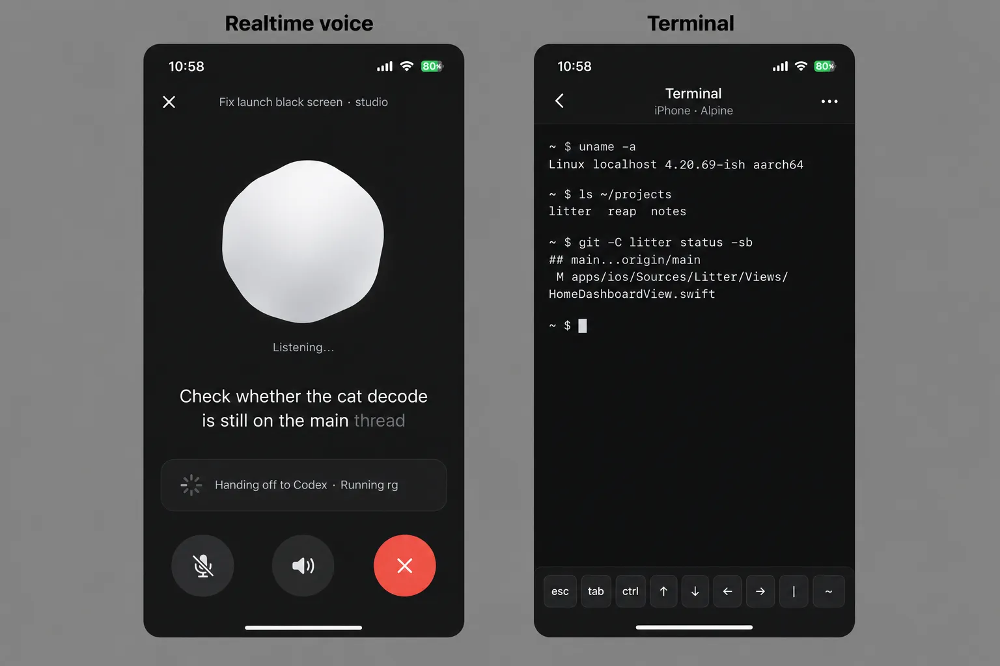
Voice: one flat orb, live transcript, a handoff status card, three controls. Terminal: full-bleed SF Mono with an accessory key bar.
6.8 Not done yet
Conversation info and the model/mode picker (generation timed out)
Sessions on one server, and the long-press actions menu
Light mode for home and conversation
Launch storyboard: launch screen → cached home → live
Apps list and saved app
7. Litter identity — three directions
Round 2 read too much like ChatGPT. These keep the calm base (17pt SF Pro, 20pt margins, generous spacing) and the conversation features worth preserving (widgets, subagent cards, turn metrics, context ring, Latest), and add a Litter identity from assets the app already has: kittylitter mint #00FF9C, the Kitty Litter theme amber #F59E0B, the cat colors, and Berkeley Mono.
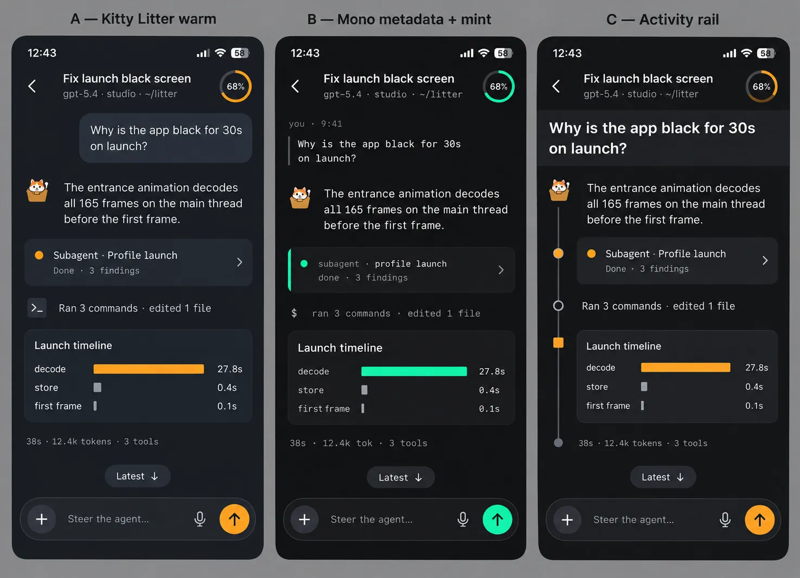
A: warm slate + amber, the existing Kitty Litter theme. B: SF Pro body with mono metadata and mint status marks. C: a left activity rail that turns agent steps into a timeline.
Cleanliness rules for all three: one accent color per theme; separate things by tone rather than borders; one left edge for text, cards and rows; no text under 13pt; metadata in one style only; icons from one SF Symbols weight.
Fix before building: in B the user message came out in monospace; it should stay SF Pro, with only the "you · 9:41" label in mono.
8. Round 3 — chosen direction: B, mono metadata
Decisions so far: identity B (SF Pro body, Berkeley-Mono-style metadata, mint #00FF9C only for status and send); home layout 6.1 option B (server switcher in the title); pairing flow kept; add-server sheet rebuilt with more room.
8.1 Conversation — multi-turn, widget preserved
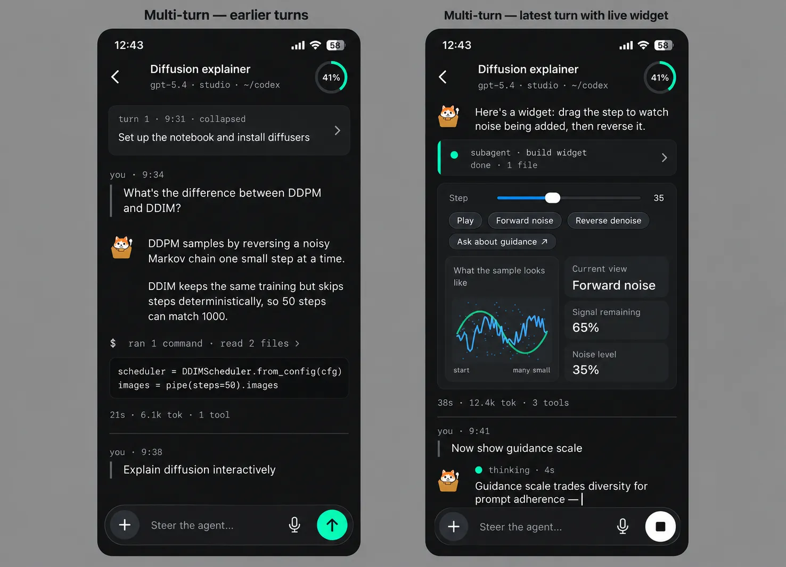
Left: an older turn collapsed to one card, a full turn with a tool line, code block and turn metrics, then the next question. Right: the generative widget (step slider, Play / Forward noise / Reverse denoise, signal chart, stat tiles) kept as-is inside the new surfaces, then a streaming reply with the stop button.
8.2 Home — server switcher, 10 servers
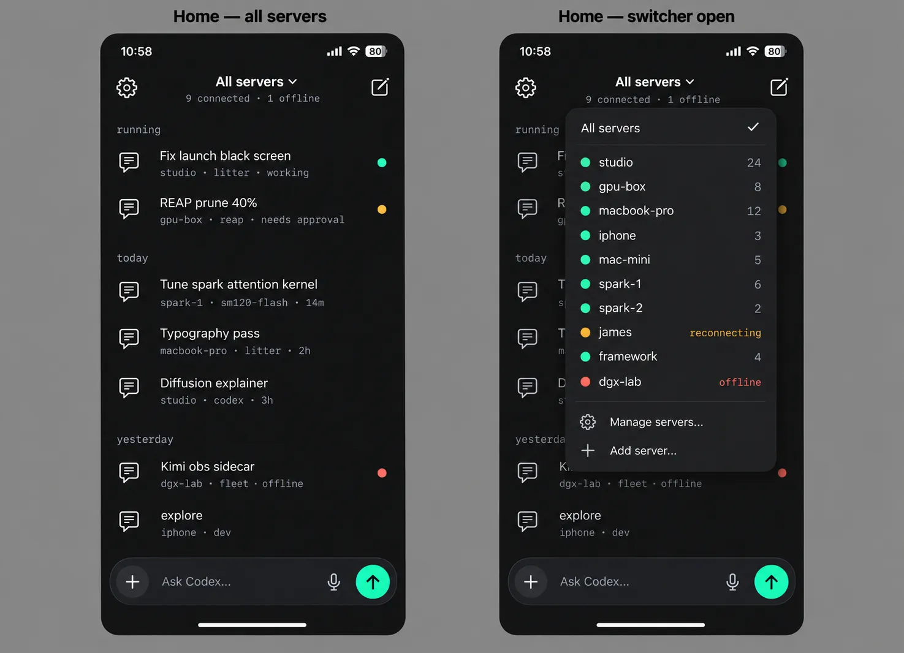
No chips row; the title switches servers. Sessions grouped running / today / yesterday, with mono metadata and status dots on the right. Cleanup to do: drop the chat-bubble icon on every row; it repeats on every line and says nothing.
8.3 Add a server — roomy
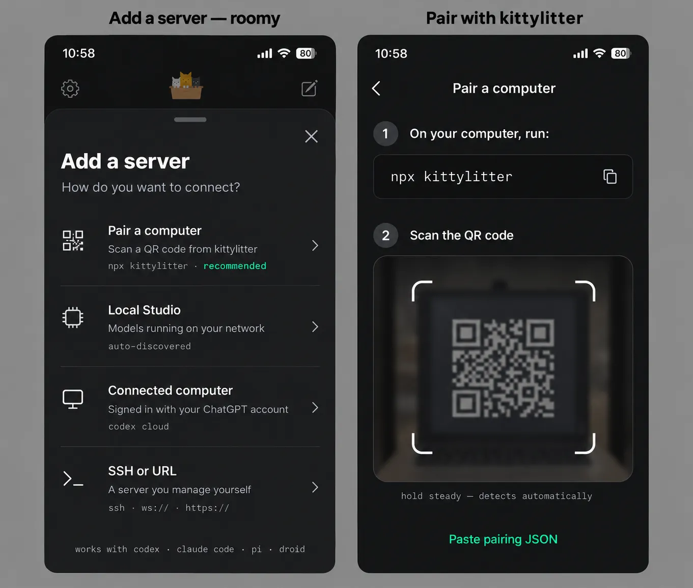
Icon tiles removed, thin line icons instead, ~96pt rows split by hairlines, one mono detail line per option. Pairing restyled to match.
9. Round 4 — quiet
Rules: no icons in lists (icons only for actions: back, settings, compose, +, mic, send); no status lights for healthy states; problems appear as one colored mono word ("needs approval", "offline", "reconnecting"); no accent color, white send button; no cat avatar or context ring in conversations; tool and subagent activity as plain mono lines; turn metrics hidden by default (tap a turn to see them). Mono metadata remains the identity.
9.1 Conversation
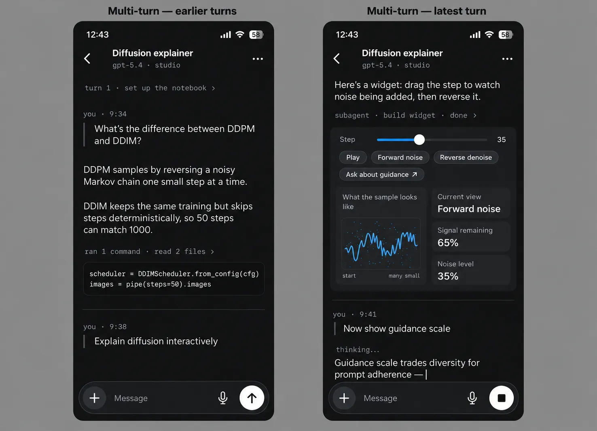
Collapsed turn as one mono line; the generative widget is still there; streaming shown as "thinking…" text.
9.2 Home
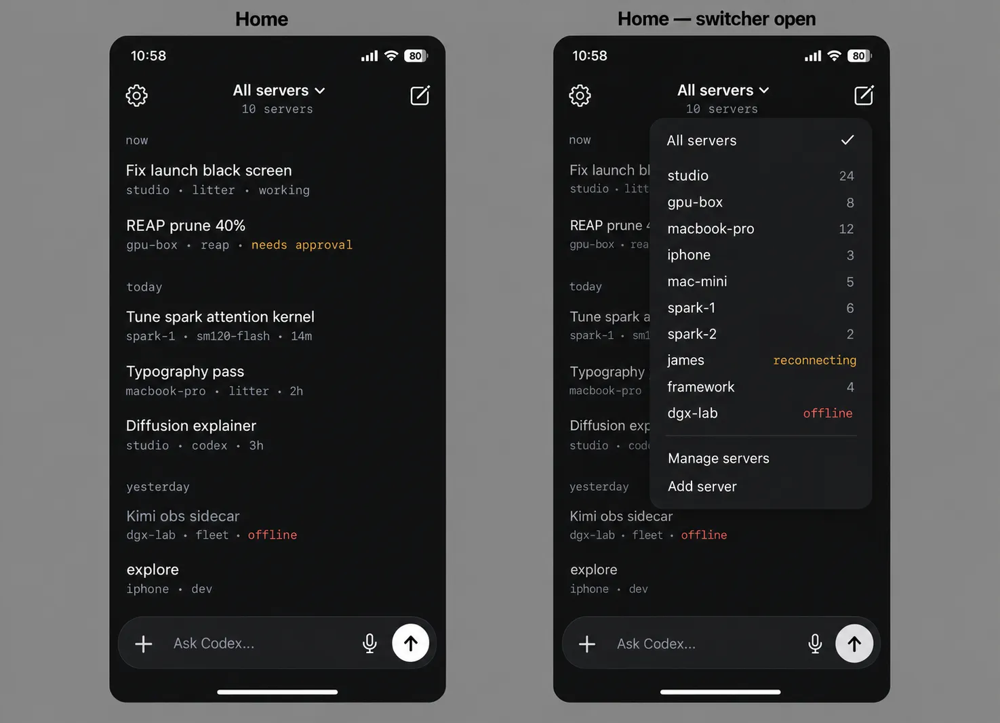
Text-only rows; only problems get color. The switcher lists all 10 servers with counts.
9.3 Add a server
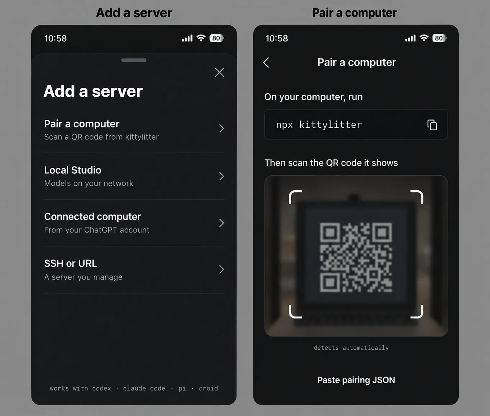
Four text rows, no icons; pairing with plain text steps.
10. Round 5 — quietest
No section labels, no "you" labels, no turn dividers, two-item metadata. Round 6 (current) sits between this and round 4.